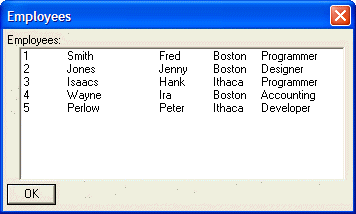

List Box (Multi-Field Multi-Column) Control Syntax
Syntax
[ Width [ " ], Height [ " ]. Variable_Name ^| n1 | n2 | nN | Choices [ ! Event ][ ? Enabled ] ]
 Note : You must not have any space characters in the finished command,
except those that may be inside entries in the Choices
list.
Note : You must not have any space characters in the finished command,
except those that may be inside entries in the Choices
list.
|
Argument |
Type |
Description |
| ^ |
C |
The leading [ and trailing ] and the ^ characters are required.. |
| Width |
N |
The width of the control. |
| Height |
N |
The height of the control. |
| Variable_Name |
C |
The name of a character variable to receive the user selection, or a numeric variable to receive the index value of the selected radio button. The index of the top-most button is 1. |
| n1,n2 ... nN |
|
Integer values that control the size of each column in the list box. For example, if you specified a formatting string of |1|2|, the list box would be divided into two columns. The total width of the list box would be 3 'logical' units (1+2). Column 1 would be 1 logical unit wide, (or 1/3 of the total width of the list box), and column 2 would be 2 logical units wide (or 2/3 of the total width of the list box). A formatting string of |2|5|2|7| would divide the list into 4 columns, with column widths respectively of 2/16ths, 5/16ths, 2/16ths and 7/16ths or the column width specified by the size parameter. |
| Choices |
C |
See Choices Syntax. You must either use the use {DATA} command or the K Directive to preserve the formatting of selected items. |
| Event |
C |
Optional. See Event Syntax. |
| Enabled |
L |
Optional. See Enabled Syntax. |
Description
The Tabbed List Box control displays a list box with multiple columns. The entries in the choice_array or choice_variable are separated into columns with the "|" (tab) character.
 Note : You must have
an Event if you want to respond to the user's
selection in the Code
section of the dialog box.
Note : You must have
an Event if you want to respond to the user's
selection in the Code
section of the dialog box.
|
Dim employees100 as C names = <<%a% 1 Smith Fred Boston Programmer 2 Jones Jenny Boston Designer 3 Isaacs Hank Ithaca Programmer 4 Wayne Ira Boston Accounting 5 Perlow Peter Ithaca Developer %a% employees.initialize(names) result=ui_dlg_box("Employees",<<%dlg% Employees:; [.64,10selected^|1|1|3|1|1|employees] ; <*&OK> %dlg% ) |

See Also
Xdialog Language Directives and Operators, Xdialog Control Reference